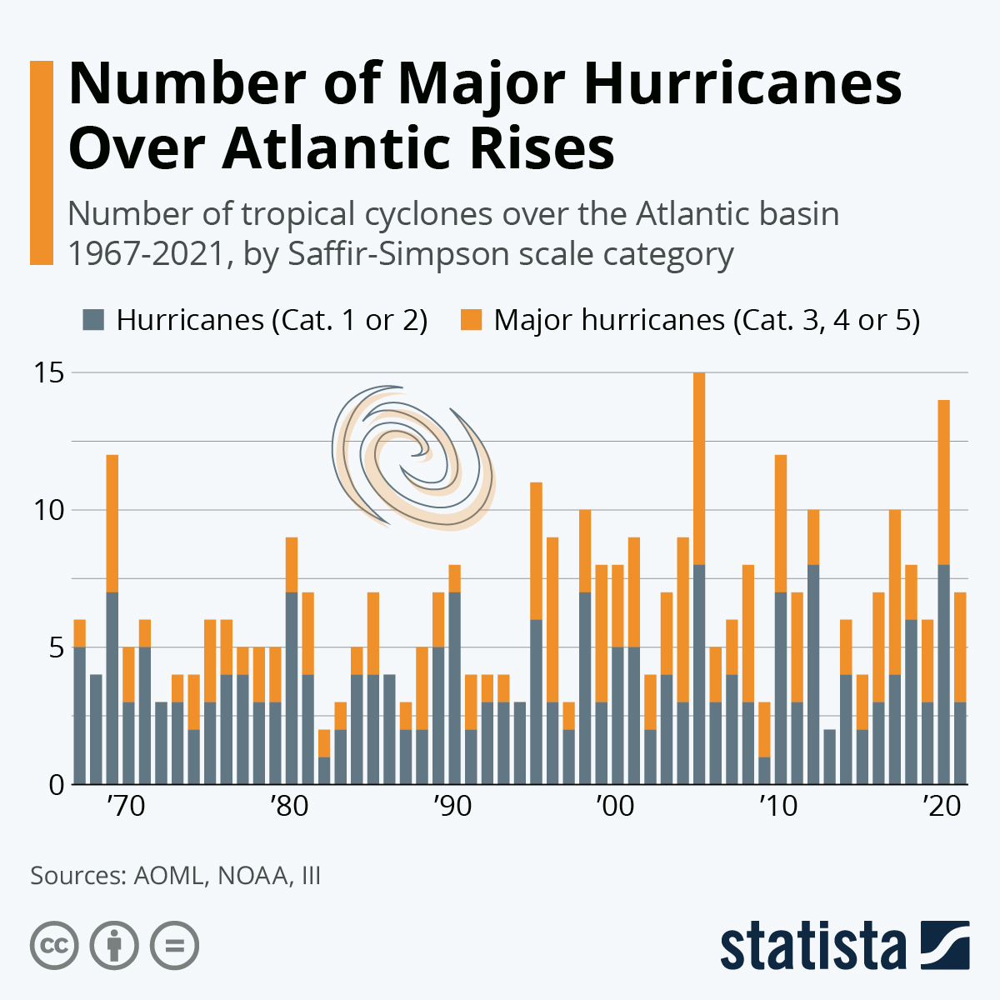

Hurricanes are getting bigger and badder as climate change rages. New studies find that there is more intensity created in these storms faster that what was previously naturally possible. Why is this happening?
Hurricanes (also called typhoons or cyclones in different areas of the world), are very intense storms formed over warm bodies of water. They range in intensity on a 5 point scale referred to as categories (Saffir-Simpson scale).
Stronger hurricanes means more flooding, more destruction, and much more money spent and lost to storm prevention or rebuilding. Take Hurricane Katrina into consideration; how devastating it was- and think that every hurricane in the future will be just like that one except harder to anticipate where it will hit landfall.
Climate change will continue to affect storms of all types all across the globe, and will continue to get worse if something isn't done about it soon.
What can you do?
I know what you're thinking. 'How can I stop a hurricane?' You can't. But what you can do to help stop climate change is cut down on food waste, take a train instead of a plane, or shut your lights off when you're no longer using them. If you're looking to buy a new car, go electric!
Just doing a small amount can make a world of difference.
"The greatest threat to our planet is the belief someone else will save it."- Robert Swan
Don't sit around waiting for someone else to start. Be the change.
Visual
This is a visual of the last 50 years of hurricane intensity.
 A graph about hurricane intensity.You can see that there is more grey (category 1 and 2) in the beginning of the graph and then orange dominates at the end of the timeline (category 3, 4, and 5). Look at the difference in the amount of color.
Information by Nasa A Force of Nature: Hurricanes in a Changing Climate" · Images by Statista{kind=link}